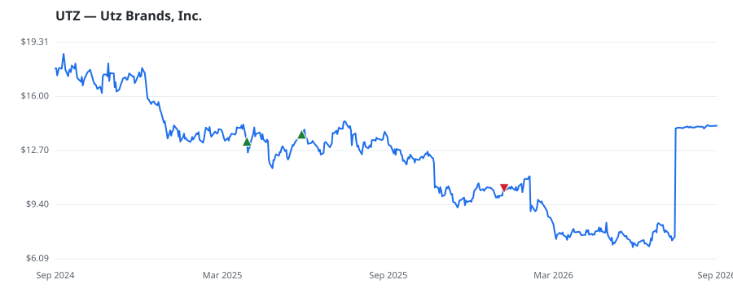

bullish · bearish · n/a — dots: price>SMA10 · SMA10>SMA50 · SMA50>SMA200 · up>down volume (20d)
Food, Beverage & Tobacco · small cap
Members who bought UTZ earned a dollar-weighted +5.8% from their disclosure dates, versus +40.6% for the S&P 500 over the same holding windows (-34.8% alpha).

▲ green = a disclosed purchase · ▼ red = a disclosed sale (plotted on disclosure date)
Utz Brands Inc is a manufacturer of branded salty snacks based in the United States. It produces various salty snack foods, including potato chips, tortilla chips, pretzels, cheese snacks, party mixes, pork skins, ready-to-eat popcorn, and other snacks, which include salsa and dips. These products are offered through its flagship brands like Utz, On The Border, Zapp's, and Boulder Canyon, along with other brands, including Golden Flake, Miguelito's, Hawaiian, Bachman, Tim's Cascade, Dirty Potato Chips, TGI Fridays, and Vitner's. The company's products are packaged in a variety of different siz MISCELLANEOUS FOOD PREPARATIONS & KINDRED PRODUCTS · website
| Revenue | $1.4B | Net income | $-7.7M |
|---|---|---|---|
| Operating income | $19.5M | Diluted EPS | $0.01 |
| Assets | $2.8B | Equity | $1.3B |
| Member | Chamber | Out-performer | Disclosed buys $ | Return on buys |
|---|---|---|---|---|
| Gilbert Cisneros | house | — | $16K | +5.8% |
Disclosed $ figures are bracket midpoints — filings report ranges (e.g. $1,001–$15,000), not exact amounts.